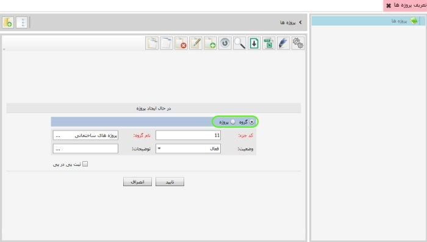

در این قسمت شما می توانید پروژه هایی که در حال اجرا دارید را تعریف کنید و حساب های خود را به تفکیک پروژه نگهداری نمایید. پیشنهاد می شود پروژه ها را گروه بندی کنید و در داخل هر گروه پروژه ی مربوط به آن را تعریف کنید برای تعریف گروه یا پروژه از نوار ابزار گزینه ی اضافه یا F8 را بزنید تصویر زیر نمایان می شود

در تصویر بالا درون کادر سبز رنگ دو گزینه مشاهده می کنید
گزینه اول برای تعریف گروه و گزینه ی دوم برای تعریف پروژه می باشد
برای تعریف گروه اطلاعات مربوط به آن را تکمیل کرده و گزینه ی تایید را بزنید
برای تعریف یک پروژه در درون یک گروه، روی نام گروه مورد نظر کلیک کنید
از نوار ابزار گزینه ی اضافه یا F8 را بزنید
گزینه ی تعریف پروژه را فعال کنید
اطلاعات مربوط به آن را تکمیل کرده و گزینه ی تایید را بزنید
پروژه در درون گروه مورد نظر تعریف خواهد شد.